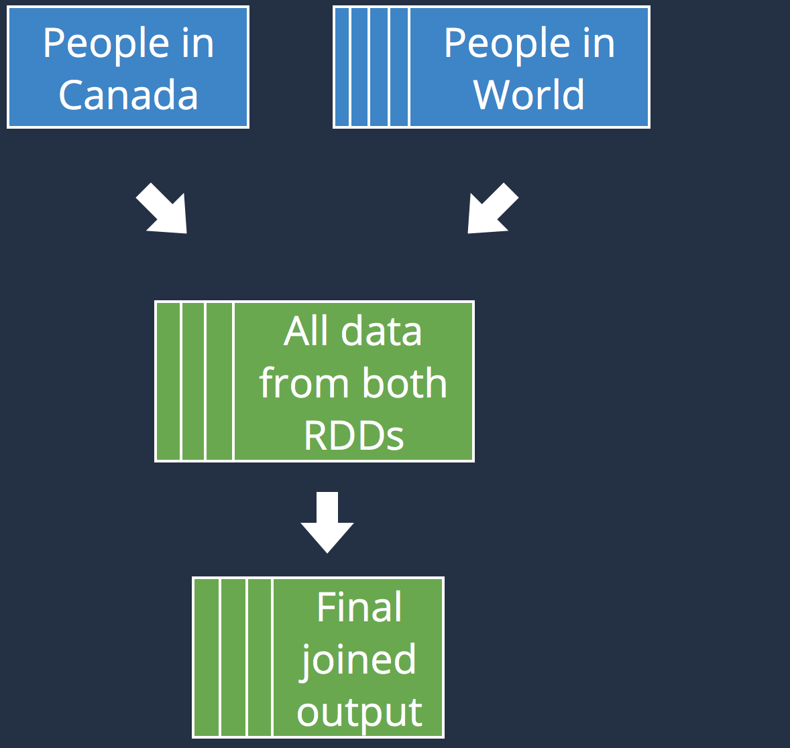

Quick overview
- Created in 2009
- Large-scale data processing engine
- Unified framework
- Extremely effective
- Popular
Agenda

Spark Architecture
Driver
Cluster
Manager
Manager
Executor
Cache
Node 1
Executor
Cache
Executor
Cache
Node 2
Resilient Distributed Dataset
Data
Executor
Executor
RDD
/* sc stands for Spark's context */
// numSlices is optional
val ints: RDD[String] =
sc.parallelize(Seq(1, 2, 3,4), numSlices)
// minPartitions is optional
val seqFiles: RDD[(Text, Text)] =
sc.sequenceFile[Text, text](input, minPartitions)
// minPartitions is optional
val rdd3: RDD[String] =
sc.textFile("hdfs://...", minPartitions)
Transformation & Actions
Transformations
val wc: RDD[(String, Int)] = rdd
.flatMap(_.split(" "))
.map((_, 1))
.reduceByKey(_ + _)
// Retrieves the data of each partition
val result: Seq[(String, Int)] = wc.collect()
// Writes the data in text files
val result: Unit = wc.saveAsTextFile("...")
// Counts the number of element in an RDD
val result: Long = wc.count()
// Retrieves the first four elements of an RDD
val result: Seq[(String, Int)] = wc.take(4)
Lineage
textFile(...)
.filter(...)
.map(...)
.reduceByKey(...)
HadoopRDD
FilteredRDD
MappedRDD
ShuffledRDD
...
- map
- flatMap
- union
- ...
...
- reduceByKey
- groupByKey
- join*
- ...
Data
Executor
Executor
Executor
Executor
- val output = sparkContext
- .textFile("hdfs://...")
- .flatMap(_.split(" "))
- .map((_, 1))
- .reduceByKey(_ + _)
- .collect()
- print output
- Executed on the driver
- Executed on the executors
- Both may be involved
- var counter = 0
- val rdd = sc.parallelize(Seq(1, 2, 3, ...))
- rdd.map { rddItem ⇒
- counter += 1
- rddItem
- }.collect()
- print("Counter value: " + counter)
val rdd = sc.parallelize(Seq(1, 2, 3, 4))
val con = ... // get JDBC connection
rdd.map { record ⇒
findOrderById(con, record).length
}val rdd = sc.parallelize(Seq(1, 2, 3, 4))
rdd.map { record ⇒
val con = ... // get JDBC connection
findOrderById(con, record).length
}val rdd = sc.parallelize(Seq(1, 2, 3, 4))
rdd.map { record ⇒
val con = ... // get JDBC connection
findOrderById(con, record).length
}rdd.mapPartitions { recordIterator ⇒
val con = ... // get JDBC connection
recordIterator.map { record ⇒
findOrderById(con, record).length
}
}Shared variables
var counter = 0
val rdd = sc.parallelize(data)
rdd.map { rddItem ⇒ counter += 1 }.collect()
print("Counter value: " + counter)val hugeArray = ...
val bigRddWithIndex = ...
bigRddWithIndex.map { index ⇒ hugeArray[rddItem.key] }
...Accumulators and Broadcast variables !
Accumulators
|
 |
| Accumulators aggregate values coming from the executors to the driver | |
Broadcast variables
|
 |
| Broadcast variables propagate a read-only value to all executors | |
RDD : Persistence and Caching
val rdd = input.map(x ⇒ x * x)
rdd.count() // RDD is computed first here
result.collect() // RDD is recomputed hereval rdd = input.map(x ⇒ x * x)
rdd.persist(StorageLevel.DISK_ONLY)
rdd.count() // RDD is computed first here
result.collect() // RDD won' be recomputed hereresult.cache() // Use memory storage level
result.unpersist() // Suggest a manual eviction
| Level | Space | CPU | RAM | Disk |
| MEMORY_ONLY | High | Low | Y | N |
| DISK_ONLY | Low | High | N | Y |
| MEMORY_AND_DISK | High | Medium | Some | Some |
| MEMORY_ONLY_SER* | Low | High | Y | N |
| MEMORY_AND_DISK_SER* | Low | High | Some | Some |
| (*) : Data is serialized before being persisted (takes less space) | ||||
sc.setCheckpointDir("...")
someRDD.checkpoint // Materialize the RDD- Release pressure on executor's memory/disk
- RDD's data survives beyond a Spark application
- Checkpointing may be slower
Best Practices:
- Iterative computations / Multiple actions
- Breaking Long chain of (expansive) transformations
- If the cost to compute each partition is too high
Spark Execution Plan
textFile
flatMap
map
reduceByKey
Data
Executor
Executor
Executor
Executor
Stage 1
Stage 2
Efficient Shuffles
What's wrong with shuffles?
- Data movement is expansive
- Shuffles generate Stages
- Fault tolerance
 |
canadians.join(provinces)
|
 |
|
|  |
|
 |
|
Efficient Data distribution
- Data is split into multiple partitions
- The initial number of partition can be configured
- Partitions do not span
- The number of partition can change
A good data distribution is the key for efficient Spark jobs.
// use the default number of partitions
rdd.groupBy(...)
// distributes the resulting data in 2 partitions
rdd.groupBy(..., 2)// p(k) = k % num_partitions
val partitioner = new HashPartitioner(nbPartitions)
rdd.groupBy( ... , partitioner)val partitioneddRdd = ints.partitionBy(partitioner)
// prevents future repartitioning
partitioneddRdd.cache()val rdd1 = pairs.partitionBy(partitioner)
val rdd2 = rdd1.map { ... }
rdd1.partitioner // returns Some(...)
rdd2.partitioner // returns Noneval ints = sc.parallelize(Seq(1,2,3,4,5,6,7,8,9,0), 4)List(3, 4, 5)
List(6, 7)
List(1, 2)
List(8, 9, 0)ints.coalesce(3)List(3, 4, 5)
List(6, 7, 8, 9, 0)
List(1, 2)
ints.repartition(3)List(5, 7, 8)
List(1, 3, 9)
List(2, 4, 6, 0)
- Optimal number of partition: number of cores * 2 or 3
- Too few partition would not take fully advantage of your cluster
- Too many partition would imply too much IO
- Keep the balance between memory, parallelism and data distribution
Conclusion
- Learning Spark : by Andy Konwinski, Holden Karau, and Patrick Wendell
- High Performance Spark : by Holden Karau, and Rachel Warren
- Advanced Analytics with Spark : by Josh Wills, Sandy Ryza, Sean Owen, and Uri Laserson
- http://blog.cloudera.com/
francis.toth@yoppworks.com
Spark's high-level APIs
Spark SQL
- Released in February 2015
- Structured dataset querying through SQL
- Integrates with Hive, Parquet, JSon...
- Supports most of Hive's feature

import org.apache.spark.sql.hive.HiveContext
val hiveCtx = new HiveContext(new SparkContext(...))import org.apache.spark.sql.SQLContext
val sqlCtx = new SQLContext(new SparkContext(...))val dataframe = sqlCtx.createDataFrame(rdd)val dataframe = hiveCtx.jsonFile(inputFile)scala> dataframe.show()
root
|-- foo: struct (nullable = true)
| |-- waldos: array (nullable = true)
| | |-- element: string (containsNull = false)
|-- bar: boolean (nullable = true)
|-- qux: string (nullable = true)input.registerTempTable("foobar")
val foobarz = hiveCtx.sql("SELECT * FROM foobar ORDER BY qux LIMIT 10")foobarz.select(...).filter(...).groupBy(...)
foobarz.rdd.filter(...).map(...)Spark Streaming
- Released in 2013
- Very stable and robust
- Real-Time analytics API
- Trendy
// Boilerplate
val conf = new SparkConf()
.setMaster("local[2]").setAppName("NetworkWordCount")
val ssc = new StreamingContext(conf, Seconds(1))
// Create a DStream listening on port 9999
val lines: DStream[String] = ssc.socketTextStream("localhost", 9999)
lines.flatMap(_.split(" "))
.map(word => (word, 1))
.reduceByKey(_ + _)
.print()
ssc.start() // Start the computation
ssc.awaitTermination() // Wait for the computation to terminate| Fault-tolerance : |
|

Spark APIs : What's left ?
| Spark ML : |
|
| GraphX : |
|